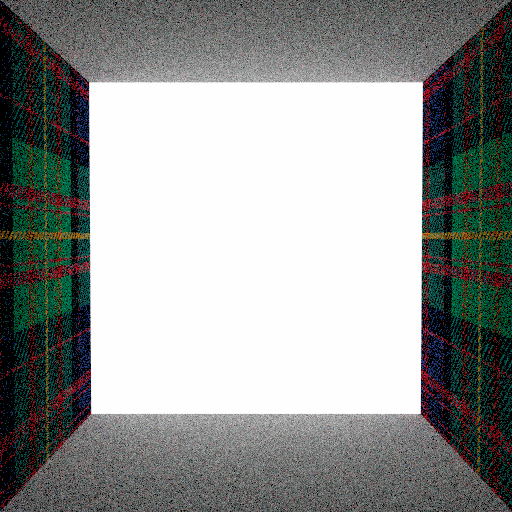
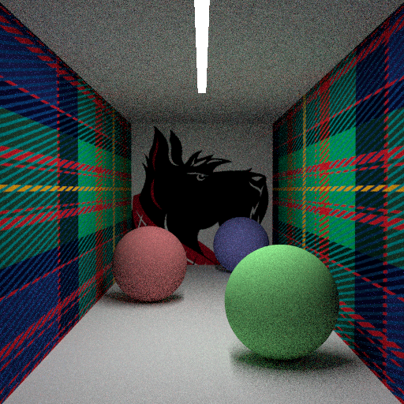

**Assignment 4 Report**
Student name: XXXX
(##) About this template
* Structure your report using numbers and titles following those of the assignment.
* For every task include all images you generated. dirt will generate both an `.hdr` and an sRGB tonemapped `.png` image of your rendering. Use the `.png` in the comparisons in your report.
* For tasks where we provide a reference image, include a comparison of your output to the reference (see examples of this below)
* Include descriptions of encountered problems, a list of external libraries that you used (if applicable) and the time you spent on each task.
For an overview of Markdeep and its syntax, see the [official demo document](https://casual-effects.com/markdeep/features.md.html) and
the associated [source code](https://casual-effects.com/markdeep/features.md.html?noformat).
(##) Feedback
Use this section to provide feedback about the assignment.
(##) WARNING! Your images for this assignment are rendered with fewer samples, don't worry if your images have more noise as long as they look similar to the reference images.
(##) Task 1: Russian Roulette
Empty Cornell Box for the Unidirectional Volumetric Path Tracer

Empty Cornell Box for the Next Event Volumetric Path Tracer

(##) Task 2: Henyey-Greenstein Phase Function
G = 0, PDF